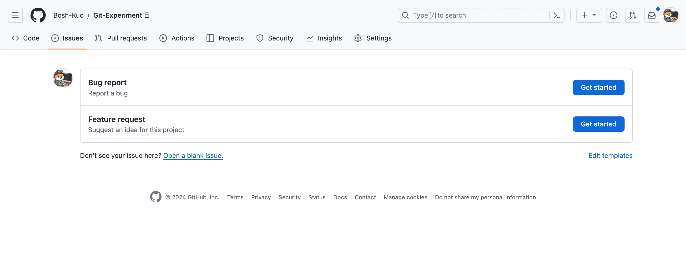
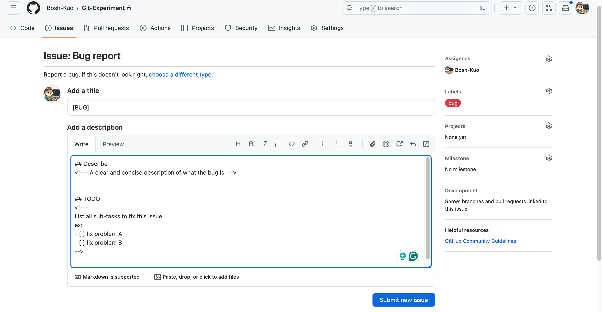
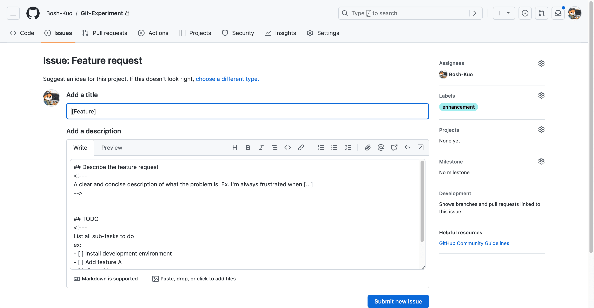
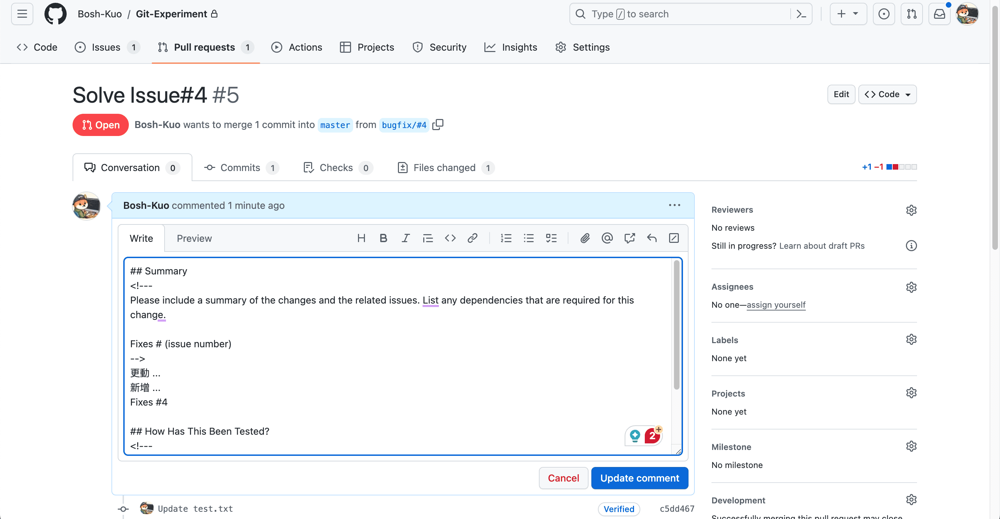
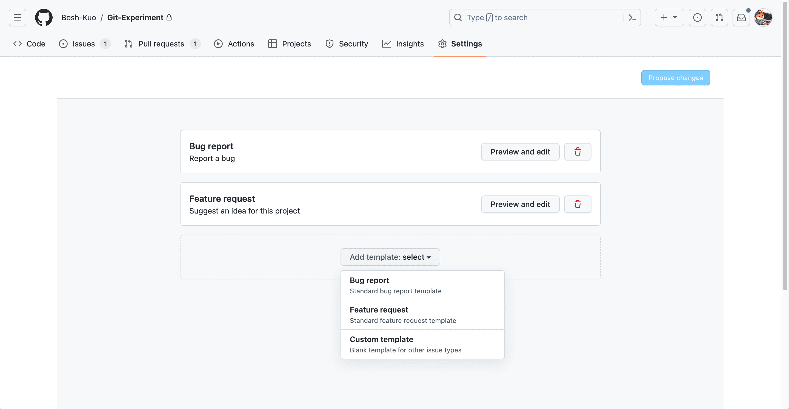

使用 GitHub Issues 與 PR 模板組織專案工作流
GitHub Issues、Pull Requests 與開發工作流的關係
當多人共同開發一個缺乏管理的 GitHub 專案時，常會遇到下列情境：
- 「這個 PR 解決了哪些問題？問題記錄在哪裡？」
- 「功能 A 修好後，功能 B 又冒出新 Bug。」
- 「這個問題我已經在修了。」
如果專案缺乏有效的規劃、控制與溝通，修問題的過程很容易再製造新問題。因此，多數有經驗的開發者會在專案初期先定義協作規範，例如：
- Issues、PR 的內容格式
- 分支命名原則
- 分支合併規範
這能讓所有協作者以一致規則記錄與推進工作，提升團隊效率。
我在前公司實習時，團隊採用 GitHub Flow：以 Issues 記錄待解問題，並要求每個 PR 清楚描述變更內容、解決方式、測試結果，且必須關聯對應的 issue 編號。即使是個人專案，這套流程仍可幫助你追蹤每次變更的目的、內容與驗證方式；若發生問題，也能快速追溯。
以下是使用工作流的主要好處：
- 開發記錄清晰： 可追蹤每次變更的目的、內容、測試與關聯議題。
- 問題追蹤容易： 能快速掌握每個問題的狀態、進度與對應 PR。
- 團隊協作順暢： 成員可快速理解彼此進度並協助。
- 變更可追溯： 發生問題時，能快速回溯根因。
為何需要 GitHub Issues 與 Pull Requests 模板？
善用 GitHub Issues 與 Pull Requests 的模板功能，可以更有效率地組織專案工作流。模板提供結構與一致性，讓提交者更容易補齊必要資訊，也讓維護者更容易審查與追蹤。
Issues 模板
以下示範兩種 Issue 模板，分別用於「回報問題」與「提出功能建議」。

透過模板，你可以統一 issue 標題格式、預設標籤，並要求提交內容包含摘要與待辦事項。


PR 模板
在 PR 模板中，可以提醒開發者連結相關 Issue，並要求描述變更項目、實作方法與測試結果。
GitHub 提供了方便的關聯機制：當 PR 以預設分支為合併目標（base）時，可以使用 close、fix、resolve 等關鍵字連結特定 issue，並在合併後自動關閉該 issue。

如何建立 GitHub Issues 與 Pull Requests 模板？
手動新增檔案
Issue、PR 模板通常放在預設分支的 .github 目錄下。若在非預設分支建立，其他協作者通常無法直接使用。
- 多模板
- Issue：在
.github/ISSUE_TEMPLATE/下建立.md檔 - PR：在
.github/PULL_REQUEST_TEMPLATE/下建立.md檔
- Issue：在
- 單模板
- Issue：在
.github/下建立ISSUE_TEMPLATE.md - PR：在
.github/下建立PULL_REQUEST_TEMPLATE.md
- Issue：在
透過 GitHub 介面新增
使用 GitHub 介面新增模板相對更方便，但目前只能直接新增 Issue 模板，PR 模板仍需手動建立檔案。步驟如下：
- 點擊儲存庫頁面的 Settings。
- 在 Features 區塊找到 Issues，點擊 Set up templates。
- 點擊 Add template，選擇 GitHub 預設模板或空白模板。

GitHub Issues Template 範例
<!-- .github/ISSUE_TEMPLATE/bug_report.md -->
---
name: Bug report
about: Report a bug
title: "[Bug]"
labels: bug
assignees: Bosh-Kuo
---
## Describe
<!-- A clear and concise description of what the bug is. -->
## TODO
<!--
List all sub-tasks to fix this issue
ex:
- [ ] fix problem A
- [ ] fix problem B
-->
GitHub Pull Requests Template 範例
<!-- PULL_REQUEST_TEMPLATE.md -->
## Summary
<!--
Please include a summary of the changes and the related issues.
List any dependencies that are required for this change.
Fixes # (issue number)
-->
## How Has This Been Tested?
<!--
Please describe in detail how you tested your changes.
Include details of your testing environment and the tests you ran.
-->